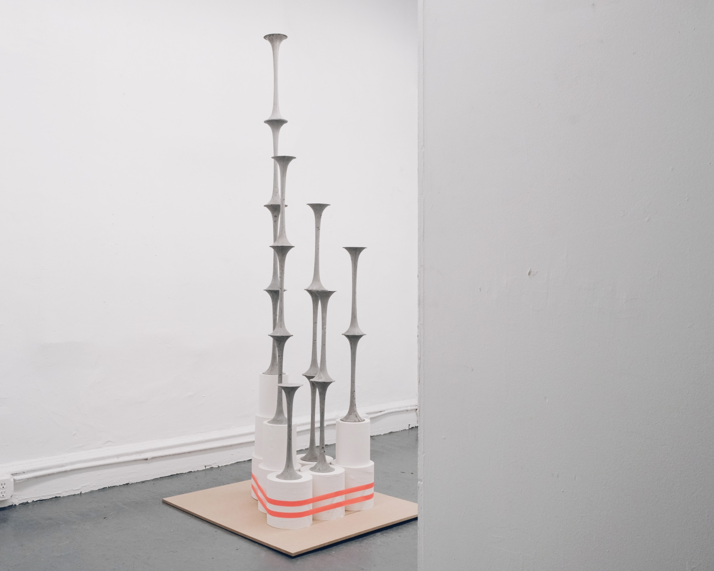

(2025)
Cement, graphite powder, pigment, paper towels, tapes, and MDF
88.5 x 36 x 36 in
Sound moves as structure allows. It stretches and contracts, pushing forward, folding back. An opening invites passage, but not all exits lead out. Some paths release sound into space, others return it to itself. A voice may leave, but that does not mean it arrives.
Concrete steadies what it surrounds. It holds, it divides. It carries weight—not just of material, but of direction, of control. A passage does not simply allow movement; it dictates its shape. Sound does not pass through untouched. It bends where it is told to bend, stops where it is meant to stop. A form like this does not simply contain—it decides.
Two openings. One structure. A space that suggests freedom but measures every movement. A voice can grow louder, yet thinner. A message can travel, yet unravel. Not everything that moves through space remains intact. Not everything that is amplified is understood.
To carry sound is to shape it. A channel is not neutral; it does not simply transmit, it filters. What is permitted to pass, and what is lost? A voice may echo, but is it still whole? Words may remain, but do they still hold weight? The farther a sound moves, the more it is reshaped by what carries it.
This is a space where voices are heard—but how far do they go.
Words are spoken—but what is left of them.
You can speak—
—but is it your voice that remains?